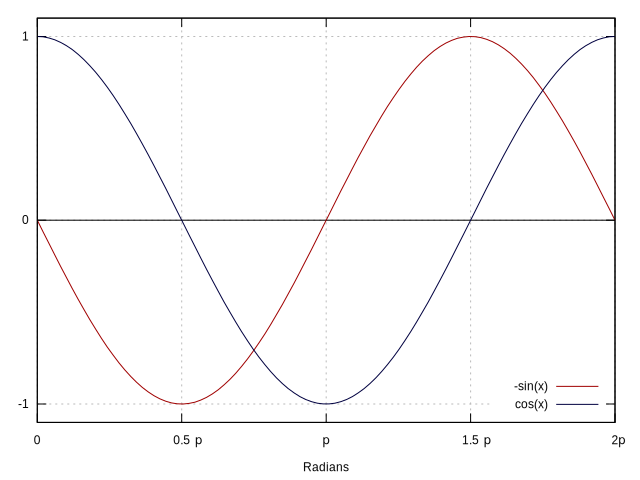
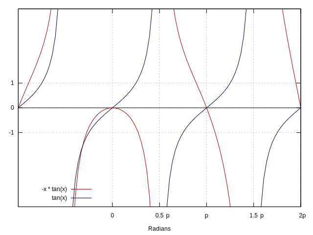

Some Trigonometry (Thinking Assignment)
Thomas J. Kennedy
So far we have focused on relatively benign functions (polynomials, monomials, logarithms, and exponentials). For these functions we generally examined behavior as:
- $x \to \infty$
- $x \to 0$
- $x \to -\infty$
Let us select two relatively simple trig functions: $sin(x)$ and $cos(x)$. Our normal analysis method falls short. Trigonometric (trig) functions are periodic. We must:
- identify the size of one period (cycle).
- examine the behavior (by looking for minima, maxima, and asymptotes).
- generalize our analysis to all periods.
1 Tools of the Trigonometry Trade
Anytime I work with trigonometry (real numbers or complex numbers), I draw/write the unit circle. This time… I will draw it as a table:
| $\theta$ | $x$ | $y$ | $cos(\theta)$ | $sin(\theta)$ | $tan(\theta)$ |
|---|---|---|---|---|---|
| $0$ | 1 | 0 | 1 | 0 | 0 |
| $\frac{\pi}{2}$ | 0 | 1 | 0 | 1 | – |
| $\pi$ | -1 | 0 | -1 | 0 | 0 |
| $\frac{3\pi}{2}$ | 0 | -1 | 0 | -1 | – |
| $2\pi$ | 1 | 0 | 1 | 0 | 0 |
Once we reach $\theta = 2\pi$ the table starts to repeat (i.e., we add $2\pi$ to each of our previous values).
2 Conditioning of sin(x)
Let us examine
$$f(x) = cos(x)$$
We know that the derivative is
$$f’(x) = -sin(x)$$
Let us take a quick look at $cos(x)$ and $-sin(x)$.

Let us examine the period $x \in [0, 2\pi]$ and use the general form of the condition number
$$ (cond \, f)(x) = \Bigg|\frac{xf’(x)}{f(x)}\Bigg| = \Big| -xtan(x) \Big| $$
Using this general form we must restrict our domains of analysis to those where $x \neq 0$ and $cos(x) \neq 0$. Let us take a quick moment to sketch, and examine the behavior, of both $tan(x)$ and $-xtan(x)$

Now we need to carefully partition our domain; ($-xtan(x)$) is not exactly periodic.
3 Thinking Assignments
As thinking assignments:
- Complete the analysis started in the previous section (i.e., define subdomains and bound the condition number)
- Complete the analysis for cases where $x = 0$.
- Complete the analysis for cases where $f(x) = 0$.